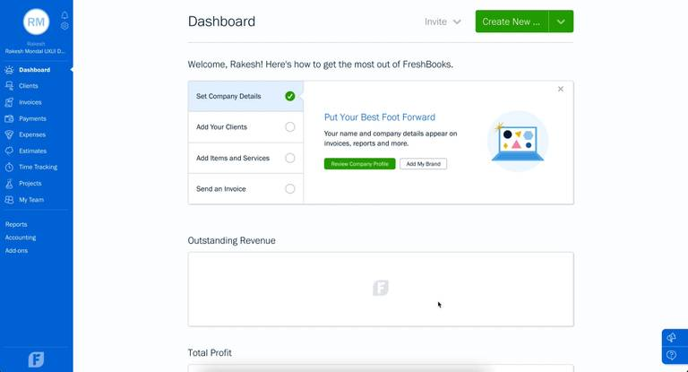
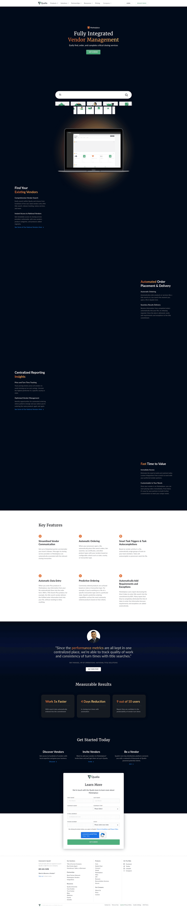
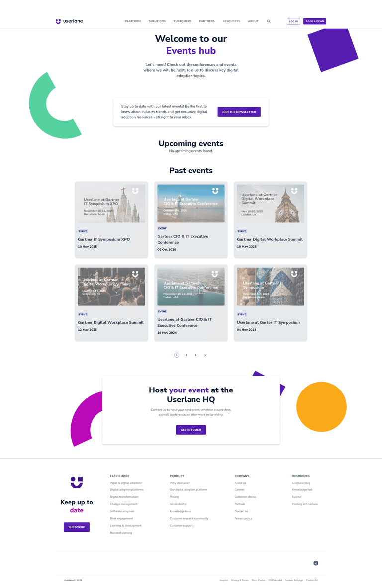
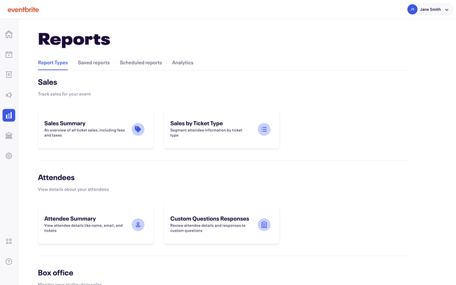
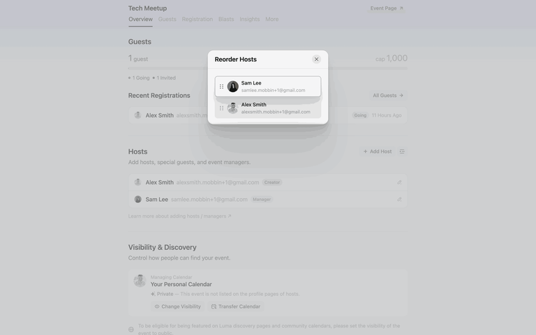
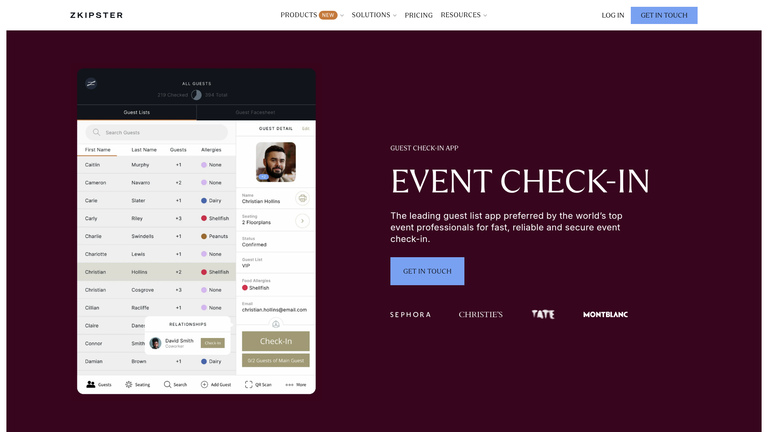
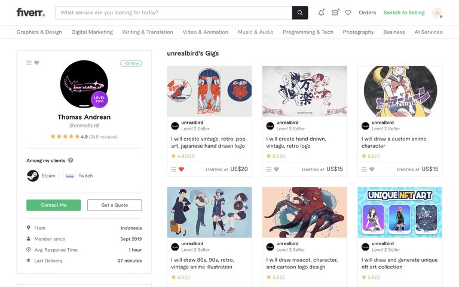

FreshBooks: спокойный сайдбар, метрики и список первоочередных задач. Подходит как база для всех четырёх ролей.
Глобальные разделы остаются в сайдбаре. Участники, услуги, бронирования и аналитика конкретного события находятся внутри мероприятия во вкладках.

FreshBooks: спокойный сайдбар, метрики и список первоочередных задач. Подходит как база для всех четырёх ролей.

Qualia: B2B-контроль поставщиков, заказов и выполнения. Полезен для операционных разделов.

Userlane: карточки будущих и прошедших событий, даты, статусы и заметная кнопка создания.

Eventbrite: инструменты и отчёты организованы в контексте выбранного события.

Luma: гости, регистрации, организаторы и настройки находятся внутри события.

zkipster: поиск, фильтры и статус каждого участника. Для проекта этапы: заявка → модерация → бронь → счёт → оплата.

Fiverr: структура профиля — доверие, рейтинг, портфолио и услуги. В проекте следует сохранить структуру, но убрать яркий consumer-стиль.
| Зона | Ориентир | Паттерн |
|---|---|---|
| Дашборды ролей | FreshBooks | Сайдбар + метрики + задачи |
| Список мероприятий | Userlane | Карточки, дата, статус |
| Внутри события | Eventbrite / Luma | Контекстные вкладки |
| Экспоненты | zkipster | Таблица и workflow-статусы |
| Исполнители | Fiverr / Qualia | Доверие, услуги, операции |